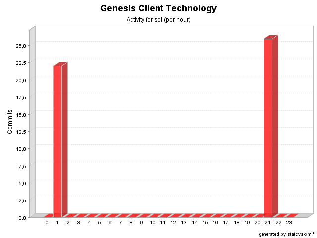

| Login: sol Fullname: sol Revisions: 48 Lines of Code: 3208 Added Lines of Code: 3270 Lines of Code per Change: 66,8 |

| Date | Author | File/Message |
|---|---|---|
| 25/08/04 21:13 | sol | 0.2-dev import
(26 Files changed,
1349 Lines changed) src/net/java/dev/genesis/ui/controller/DefaultFormController.java 1.1 added 287 src/net/java/dev/genesis/resolvers/DefaultEmptyResolver.java 1.1 added 25 src/net/java/dev/genesis/ui/metadata/FieldMetadata.java 1.1 added 134 src/net/java/dev/genesis/resolvers/EmptyResolverRegistry.java 1.1 added 55 src/net/java/dev/genesis/ui/thinlet/ErrorReporterDialog.java 1.2
(+3
-1)
src/net/java/dev/genesis/equality/EqualityComparator.java 1.1 added 23 src/net/java/dev/genesis/equality/DefaultEqualityComparator.java 1.1 added 25 src/net/java/dev/genesis/equality/EqualityComparatorAdapter.java 1.1 added 37 src/net/java/dev/genesis/ui/metadata/FormMetadata.java 1.1 added 106 src/net/java/dev/genesis/resolvers/StringEmptyResolver.java 1.1 added 47 src/net/java/dev/genesis/resolvers/EmptyResolver.java 1.1 added 23 src/net/java/dev/genesis/ui/controller/FormController.java 1.1 added 33 src/net/java/dev/genesis/ui/thinlet/OptionDialog.java 1.2
(+16
-0)
src/net/java/dev/genesis/registry/Registry.java 1.1 added 54 src/net/java/dev/genesis/equality/EqualityComparatorRegistry.java 1.1 added 53 src/net/java/dev/genesis/registry/RegistryFactory.java 1.1 added 81 src/net/java/dev/genesis/commons/beanutils/converters/BigDecimalConverter.java 1.2
(+9
-1)
src/net/java/dev/genesis/registry/DefaultValueRegistry.java 1.1 added 37 src/net/java/dev/genesis/ui/thinlet/BaseThinlet.java 1.2
(+58
-15)
src/net/java/dev/genesis/text/FormatterRegistry.java 1.2
(+28
-44)
src/net/java/dev/genesis/equality/StringEqualityComparator.java 1.1 added 50 src/net/java/dev/genesis/equality/BigDecimalEqualityComparator.java 1.1 added 28 src/net/java/dev/genesis/commons/jxpath/VariablesImpl.java 1.1 added 56 src/net/java/dev/genesis/ui/metadata/FormMetadataFactory.java 1.1 added 23 src/net/java/dev/genesis/text/EnumFormatter.java 1.2
(+2
-1)
src/net/java/dev/genesis/helpers/CriteriaPropertyHelper.java 1.1 added 56 |
| 21/08/04 01:37 | sol | Initial import
(22 Files changed,
1921 Lines changed) src/net/java/dev/genesis/ui/thinlet/BaseDialogThinlet.java 1.1 added 138 src/net/java/dev/genesis/text/DefaultFormatter.java 1.1 added 25 src/messages.properties.sample 1.1 added 6 src/option.xml 1.1 added 17 src/net/java/dev/genesis/ui/BasicValidator.java 1.1 added 217 src/net/java/dev/genesis/ui/thinlet/OptionDialog.java 1.1 added 92 src/net/java/dev/genesis/ui/ValidationUtils.java 1.1 added 154 src/error_reporter.xml 1.1 added 15 src/net/java/dev/genesis/text/FormatAdapter.java 1.1 added 43 src/net/java/dev/genesis/ui/ValidationException.java 1.1 added 33 src/net/java/dev/genesis/ui/thinlet/BaseThinlet.java 1.1 added 673 src/net/java/dev/genesis/commons/beanutils/converters/BigDecimalConverter.java 1.1 added 54 src/validator-rules.xml 1.1 added src/message.xml 1.1 added 13 src/net/java/dev/genesis/text/Formatter.java 1.1 added 23 src/net/java/dev/genesis/text/FormatterRegistry.java 1.1 added 69 src/net/java/dev/genesis/ui/thinlet/MessageDialog.java 1.1 added 101 src/net/java/dev/genesis/text/EnumFormatter.java 1.1 added 43 src/net/java/dev/genesis/ui/Form.java 1.1 added 44 src/net/java/dev/genesis/ui/thinlet/ScreenNotFoundException.java 1.1 added 25 src/net/java/dev/genesis/ui/thinlet/ErrorReporterDialog.java 1.1 added 80 src/net/java/dev/genesis/ui/UIUtils.java 1.1 added 53 |